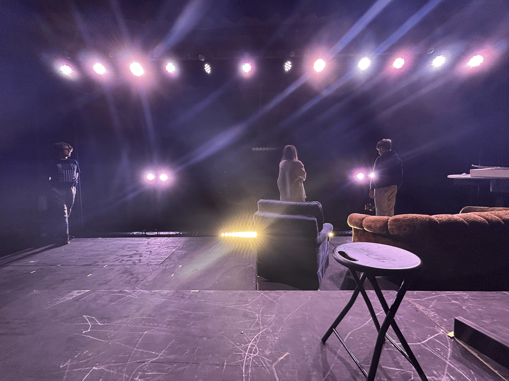
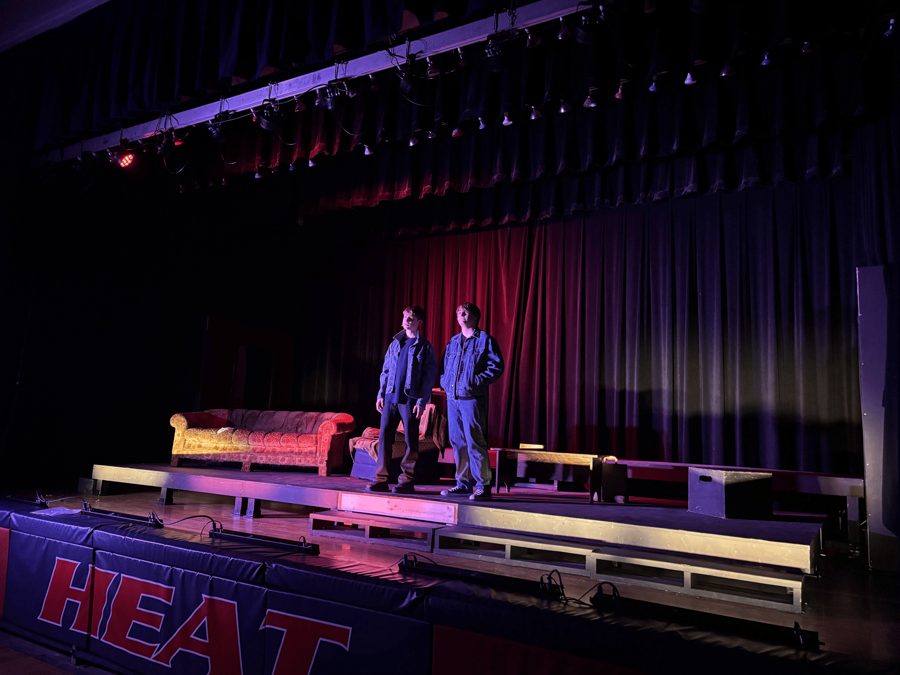
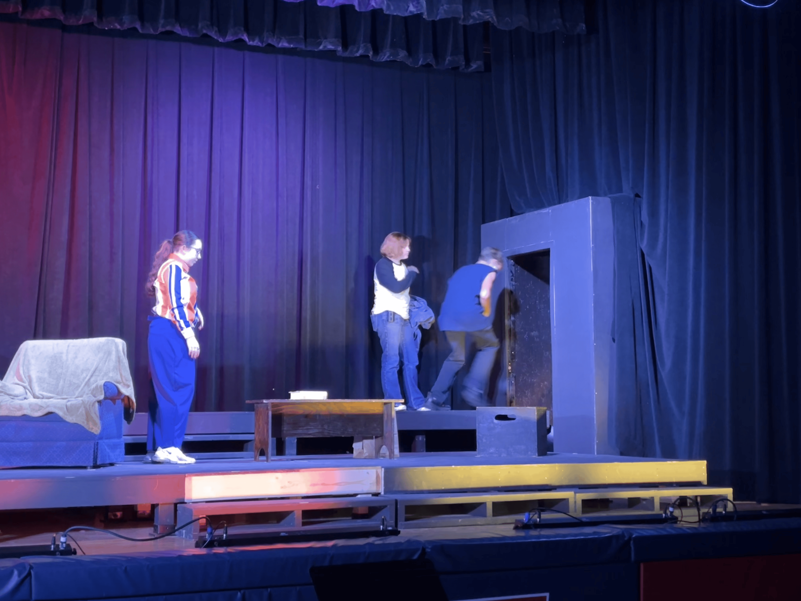
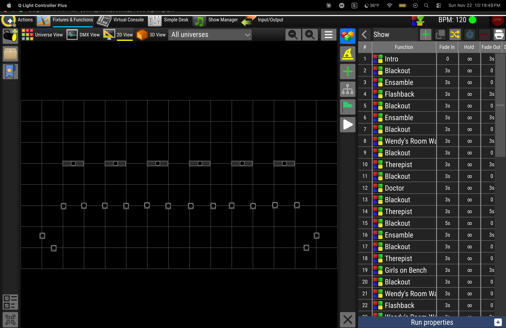

Gym Theatre Lighting
12 Chauvet DJ SlimPAR Pro H USB wash fixtures for overhead, 4 more across 2 trees for key lighting, and 6 ADJ UBL12H light bars for backlighting. Hooked into an ADJ AirStream DMX Bridge connected to my laptop with QLC+ for control.